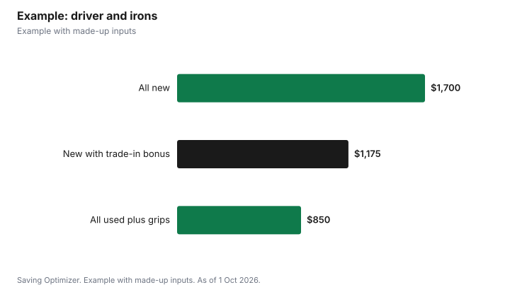

Sports · Canada
Used Golf Clubs and Club Fitting in Canada: How to Save
The cheapest way to a decent golf bag in Canada is to buy used clubs for most of the set, pay for a fitting only before a big purchase such as a driver or iron set, and trade in clubs you no longer carry. Golf Town, for example, sells pre-owned clubs inspected at the head, shaft and grip, and appraises trade-ins in store using the Golf99 or a similar price guide. Through 28 October 2026 it adds a 50% bonus to trade-in value toward select new drivers, woods and iron sets. Its vendor fitting days cost $59.99, and the fee is waived with a club purchase over $549. The Rules of Golf cap you at 14 clubs, and most beginners need far fewer.
Key takeaways
- Pre-owned clubs from a retailer are inspected; private sales need your own inspection.
- Trade-in value at Golf Town must go toward new clubs of equal or greater price; no cash.
- Trade-In Event to 28 Oct 2026: 50% bonus on select new drivers, woods and iron sets.
- Vendor fitting: $59.99, waived with a club purchase over $549.
- Rule 4.1b: no more than 14 clubs; a beginner set can be much smaller.
- Example with made-up inputs: three ways to buy a driver and irons.
How many clubs you actually need
Under Rule 4.1b of the Rules of Golf, published by The R&A and USGA, you must not start a round with more than 14 clubs or have more than 14 during the round. That is a maximum, not a target. A new golfer can learn with a half set, such as a driver or fairway wood, a hybrid, a few irons, a wedge and a putter, and add clubs once gaps in distance become obvious. Buying fewer clubs is the single biggest saving.
Buying used: what to inspect
Golf Town says each pre-owned club is inspected from grip to head. Use the same list when you buy privately, such as from an online marketplace or a club member.
| Part | Authenticity | Condition |
|---|---|---|
| Head | Authenticity inspection | Missing emblems or weights, excessive wear; dents, cracks, sky marks |
| Shaft | Authenticity inspection | Excessive bag wear, paint damage; bends, cracks, rust |
| Grip | Authenticity inspection | Excessive wear; cracks, dry rubber |
Authenticity is first on the list for a reason. When buying privately, ask for the model and serial number, compare the head and shaft labels with the maker's website, and be wary of new-looking current models priced far below what others ask. Grips can be replaced, so a club with good head and shaft but tired grips can still be a good buy; budget for regripping.
How trade-ins work
At Golf Town, you bring clubs to a store, where an associate appraises them using values from the Golf99 or a similar price guide. There are no quotes by phone or email. The trade value must be applied to a new club purchase at the same time, and the new purchase must be equal to or greater than the trade value. Credit cannot be redeemed for cash or gift cards. Junior clubs are not eligible, and clubs with cracked or bent shafts, chrome damage or excessive wear do not meet its minimum condition.
| Club | Listed estimate |
|---|---|
| Titleist TSi2 driver | $182 |
| PING G425 Max driver | $282 |
| TaylorMade SIM Max driver | $188 |
| PING G425 iron set, 7 pieces, steel | $402 |
| Cobra Aerojet iron set, 7 pieces, steel | $274 |
| Odyssey Eleven S putter | $97 |
The fall Trade-In Event
Golf Town's Trade-In Event runs from 17 September to 28 October 2026. It adds a 50% bonus to your trade-in value when you buy an eligible new club. The bonus applies to select woods and iron sets from listed brands, including TaylorMade, PING, Callaway, Cobra, Mizuno, Srixon and others. Putters and wedges can be traded in and earn the bonus, but the credit cannot go toward new putters or wedges. Iron sets must be complete, with at least five consecutive clubs. If you trade several clubs, the bonus applies to the one with the highest value, and only one bonus applies per transaction. If your purchase is less than the credit after the bonus, the difference is forfeited. Read the current terms in store, because they can change.
Fitting: when it is worth paying
A fitting matches club length, lie, shaft and head to your swing. Golf Town's vendor fitting days, run with brands such as Mizuno, cost $59.99, and the fee is waived with a club purchase over $549. That makes a fitting close to free if you were going to buy a new driver or iron set anyway. It is less useful for a brand-new golfer whose swing will change a lot in the first season. A reasonable order is: play a season with used clubs, take lessons, then get fit when you are ready to spend on new clubs. You can also bring fitting results to the used market, looking for the same model and shaft in pre-owned stock.
Other ways to save
- Compare last year's models with current ones; older new stock can be priced lower.
- Widen a used search to every store and marketplace near you, since stock varies by location.
- Buy irons as a set of five or more, since many trade-in programs and buyers value complete sets more.
- Sell clubs you will never use; a club in the garage has no value to you.
- Pair cheaper clubs with a lesson or range time; see the related guide on membership versus green fees.
Example with made-up inputs
These numbers are an example with made-up inputs. Dev wants a newer driver and iron set. Option A, all new: a made-up $600 driver and $1,100 iron set, $1,700, with the $59.99 fitting waived because the purchase is over $549. Option B, all used: a made-up $280 driver and $500 iron set, $780, with $70 for new grips, $850. Option C, trade in his old driver and irons during the event: suppose the store values them at a made-up $150 and $250. The 50% bonus applies only to the highest-value club, so the credit is $250 plus $125 plus $150, or $525, leaving $1,175 to pay for the new $1,700 set.
| Option | Cost |
|---|---|
| All new, fitting waived | $1,700 |
| All used, plus regripping | $850 |
| New with trade-in and 50% bonus | $1,175 |

Steps
- Decide which clubs you actually need; 14 is a limit, not a goal.
- Buy used for clubs you are still learning with, inspecting head, shaft and grip.
- Collect clubs you no longer use for trade-in or sale.
- Get fit before a large new purchase, and time it so the fee is waived.
- If trading in, check the bonus terms and dates, and make sure the purchase exceeds the credit.
- Budget for grips and a lesson.
Common mistakes
- Buying a full new set in your first season.
- Trading in for credit that exceeds the purchase, and forfeiting the difference.
- Ignoring shaft flex and length on used clubs.
- Paying for a fitting you will not use.
- Buying a too-good-to-be-true current model from a stranger.
Related: golf membership versus green fees and indoor golf in winter.
Sources
- Golf Town, We Take Trades and Trade-In Days (event 17 Sep to 28 Oct 2026, terms and estimated trade-in values), golftown.com, as of 1 Oct 2026.
- Golf Town, Pre-Owned Clubs (inspection list) and Vendor Fitting Days ($59.99 fee waived with club purchase over $549), golftown.com, as of 1 Oct 2026.
- The R&A, Rules of Golf, Rule 4.1b Limit of 14 Clubs, randa.org, as of 1 Oct 2026.
- Club prices and trade values in the example are made-up inputs.
Frequently asked questions
How many golf clubs are allowed in a bag?
Rule 4.1b of the Rules of Golf allows no more than 14 clubs during a round. Beginners often need far fewer.
How does Golf Town value trade-ins?
An in-store associate appraises clubs using the Golf99 or a similar price guide. Values depend on model, condition, dexterity, flex and inventory.
Can I get cash for a Golf Town trade-in?
No. Trade-in credit must go toward a new club purchase of equal or greater value and cannot be redeemed for cash or gift cards.
When does the Golf Town trade-in bonus end?
The 50% trade-in bonus event runs from 17 September to 28 October 2026 on select new drivers, woods and iron sets.
How much is a Golf Town fitting?
Vendor fitting days cost $59.99, and the fee is waived with a club purchase over $549.
What should I check on used golf clubs?
Authenticity, and condition at the head, shaft and grip: dents, cracks, bends, rust, missing weights and worn or cracked grips.
Researched and drafted with AI assistance and fact-checked against official Canadian sources. How we create content.
Disclosure: Saving Optimizer may earn a commission if a partner link is added later. No partnership is claimed on this page. Education only.